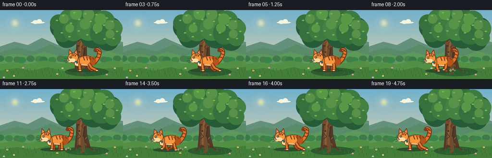
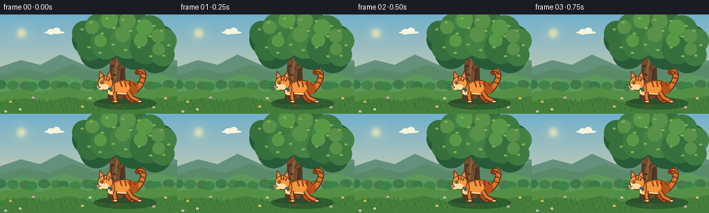
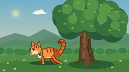

CODING AGENTS AS PIXEL WORLD MODELS
traex/GPT-5.6-Sol · instance_preservation_0054
点击播放 · 原生 RGB 像素
逐轮保存的候选
回放视频、检查图与代码变化。
每份候选均可单独播放。实际图片检查记录在下方工具轨迹中。
候选 01播放与检查图
点击播放 · 原生 RGB 像素


展开代码变化
--- 上一保存版本
+++ 本次保存版本
@@ -0,0 +1,309 @@
+from pathlib import Path
+import math
+import numpy as np
+from PIL import Image, ImageDraw, ImageFilter
+import artifact_io
+
+# Deterministic, antialiased text-to-video renderer.
+W, H, N = 256, 144, 20
+S = 4
+RS = np.random.RandomState(54)
+
+
+def sc(v):
+ if isinstance(v, (tuple, list)):
+ return tuple(int(round(x * S)) for x in v)
+ return int(round(v * S))
+
+
+def smoothstep(t):
+ t = max(0.0, min(1.0, t))
+ return t * t * (3.0 - 2.0 * t)
+
+
+def bezier(points, steps=40):
+ # Cubic bezier sampled into a smooth polyline.
+ p0, p1, p2, p3 = [np.array(p, dtype=float) for p in points]
+ out = []
+ for t in np.linspace(0, 1, steps):
+ q = (1-t)**3*p0 + 3*(1-t)**2*t*p1 + 3*(1-t)*t*t*p2 + t**3*p3
+ out.append(tuple(q))
+ return out
+
+
+def poly(draw, points, fill, outline=None, width=1):
+ draw.polygon([sc(p) for p in points], fill=fill)
+ if outline:
+ draw.line([sc(p) for p in points+[points[0]]], fill=outline, width=sc(width), joint='curve')
+
+
+def ellipse(draw, box, fill, outline=None, width=1):
+ draw.ellipse(sc(box), fill=fill, outline=outline, width=sc(width) if outline else 1)
+
+
+def line(draw, points, fill, width=1, joint='curve'):
+ draw.line([sc(p) for p in points], fill=fill, width=sc(width), joint=joint)
+
+
+def background(frame):
+ # Soft morning sky gradient.
+ h, w = H*S, W*S
+ y = np.linspace(0, 1, h)[:, None, None]
+ top = np.array([113, 176, 204], dtype=float)[None, None, :]
+ bottom = np.array([239, 218, 166], dtype=float)[None, None, :]
+ arr = top * (1-y) + bottom*y
+ arr = np.repeat(arr, w, axis=1)
+ img = Image.fromarray(np.uint8(np.clip(arr, 0, 255)), 'RGB')
+ d = ImageDraw.Draw(img)
+
+ # Hazy sun and a few cloud wisps, all behind the landscape.
+ glow = Image.new('RGBA', img.size, (0,0,0,0))
+ gd = ImageDraw.Draw(glow)
+ for r, a in [(23,7), (16,10), (10,18)]:
+ ellipse(gd, (31-r, 27-r, 31+r, 27+r), (255,242,185,a))
+ ellipse(gd, (25,21,37,33), (255,238,171,205))
+ glow = glow.filter(ImageFilter.GaussianBlur(sc(3)))
+ img = Image.alpha_composite(img.convert('RGBA'), glow).convert('RGB')
+ d = ImageDraw.Draw(img)
+ # Clouds.
+ for bx, by, alpha in [(78,24,120), (127,40,80)]:
+ c = (244,244,223)
+ ellipse(d, (bx-14,by,bx+15,by+4), c)
+ ellipse(d, (bx-10,by-3,bx+1,by+5), c)
+ ellipse(d, (bx-2,by-5,bx+9,by+4), c)
+
+ # Distant hills and layered meadow.
+ poly(d, [(0,76),(30,66),(58,73),(87,58),(121,73),(156,61),(191,72),(222,57),(256,67),(256,104),(0,104)], (100,145,123))
+ poly(d, [(0,88),(34,78),(69,86),(105,72),(137,84),(177,72),(213,82),(256,72),(256,112),(0,112)], (89,139,104))
+ poly(d, [(0,99),(28,91),(61,96),(93,87),(126,97),(159,87),(194,96),(225,86),(256,93),(256,144),(0,144)], (92,153,91))
+
+ # Distant shrubs to ground the main tree.
+ for i in range(20):
+ x = i*15 + (i%3)*3
+ yy = 102 + (i%4)
+ ellipse(d, (x-8,yy-7,x+9,yy+6), (58+(i%3)*7, 122+(i%2)*9, 73))
+
+ # Foreground meadow bands.
+ poly(d, [(0,113),(30,108),(57,113),(91,105),(129,112),(167,104),(204,111),(236,105),(256,108),(256,144),(0,144)], (83,143,68))
+ poly(d, [(0,126),(35,121),(67,126),(99,119),(134,127),(173,118),(209,124),(256,118),(256,144),(0,144)], (69,126,58))
+ return img
+
+
+def draw_tree(img, frame):
+ d = ImageDraw.Draw(img)
+ # Ground shadow cast by tree.
+ ellipse(d, (135,120,226,138), (46,91,47))
+
+ # Main trunk silhouette and roots. Tree centered at x=170.
+ trunk_dark = (82,58,40)
+ trunk = (113,76,47)
+ trunk_light = (145,96,55)
+ poly(d, [(155,125),(158,92),(159,62),(166,41),(176,41),(180,65),(181,94),(189,124),(179,122),(172,126),(165,121)], trunk_dark)
+ poly(d, [(160,122),(162,91),(163,63),(168,43),(174,43),(176,66),(175,95),(181,122),(174,119),(169,124)], trunk)
+ # Exposed roots.
+ poly(d, [(163,116),(153,126),(140,130),(156,127),(171,120)], trunk_dark)
+ poly(d, [(176,116),(190,126),(208,129),(191,124),(174,120)], trunk_dark)
+ poly(d, [(170,115),(170,130),(162,136),(176,131),(177,118)], trunk)
+
+ # Large branches.
+ line(d, [(169,67),(151,50),(134,42)], trunk_dark, 10)
+ line(d, [(171,59),(193,42),(212,34)], trunk_dark, 11)
+ line(d, [(167,72),(146,63),(125,60)], trunk, 7)
+ line(d, [(174,75),(195,61),(221,58)], trunk, 8)
+ line(d, [(170,48),(171,24)], trunk_dark, 8)
+
+ # Bark highlight and fissures.
+ line(d, [(166,116),(166,91),(169,70),(170,48)], trunk_light, 3)
+ line(d, [(178,113),(174,95),(176,78)], (63,48,35), 2)
+ line(d, [(161,104),(168,99),(162,92)], (64,48,35), 1)
+ line(d, [(174,82),(169,77),(176,71)], (69,49,34), 1)
+ line(d, [(164,67),(170,61)], (174,111,59), 1)
+ line(d, [(177,105),(181,100)], (159,104,60), 1)
+ for yy, xx in [(87,165),(56,171),(97,174),(74,163)]:
+ ellipse(d, (xx-2,yy-1,xx+2,yy+2), (68,50,36))
+
+ # Canopy: dark underlayer, then many clustered leaf crowns. Subtle breeze only.
+ sway = math.sin(frame*0.55) * 0.8
+ dark_clusters = [(127,36,23),(151,25,25),(178,24,29),(205,27,26),(230,39,24),(139,55,24),(195,50,30),(224,61,24)]
+ for i,(x,y,r) in enumerate(dark_clusters):
+ ellipse(d, (x-r+sway*(i%2),y-r,x+r+sway*(i%2),y+r), (39,91,55))
+ mid_clusters = [(122,27,18),(143,18,20),(165,13,23),(192,15,23),(216,24,23),(237,38,18),(130,48,19),(153,42,23),(184,39,25),(211,48,24),(235,58,17)]
+ for i,(x,y,r) in enumerate(mid_clusters):
+ dx = sway * (0.4 + (i%3)*0.25)
+ col = [(53,112,61),(61,123,64),(68,130,67)][i%3]
+ ellipse(d, (x-r+dx,y-r,x+r+dx,y+r), col)
+ light_clusters = [(133,18,10),(158,8,12),(184,9,12),(209,19,12),(228,31,10),(145,38,9),(177,29,11),(203,37,10),(229,50,9)]
+ for i,(x,y,r) in enumerate(light_clusters):
+ dx = sway*(0.6+(i%2)*0.4)
+ ellipse(d, (x-r+dx,y-r,x+r+dx,y+r), (88,145+(i%2)*8,72))
+ # Speckled leaf highlights create natural texture.
+ leaves = [(118,21),(131,11),(147,27),(164,19),(177,7),(188,23),(200,9),(216,31),(233,23),(243,44),
+ (128,47),(144,55),(163,43),(181,51),(200,47),(217,60),(236,59),(154,5),(222,16)]
+ for i,(x,y) in enumerate(leaves):
+ dx=sway*(0.5+(i%3)*0.2)
+ ellipse(d,(x-2+dx,y-1,x+3+dx,y+2),(126,168+(i%2)*8,82))
+
+
+def draw_meadow_details(img, frame):
+ d = ImageDraw.Draw(img)
+ # Fine foreground grass. Static locations with tiny wind movement at tips.
+ for i in range(68):
+ x = (i*37 + 11) % 256
+ y = 125 + ((i*19) % 18)
+ height = 3 + (i % 6)
+ bend = math.sin(frame*0.5 + i)*0.65
+ col = (43,105+(i%3)*8,49)
+ line(d, [(x,y),(x+bend,y-height)], col, 1)
+ # Small flowers, concentrated away from cat's path.
+ flowers = [(15,126,(246,199,83)),(29,137,(238,226,168)),(48,120,(221,178,203)),
+ (119,133,(247,213,97)),(130,121,(229,221,183)),(222,134,(231,184,197)),
+ (239,121,(245,211,104)),(8,140,(223,209,238))]
+ for x,y,c in flowers:
+ line(d,[(x,y+4),(x,y)],(44,105,48),1)
+ ellipse(d,(x-2,y-1,x+2,y+2),c)
+ ellipse(d,(x-0.6,y,x+0.6,y+1),(130,91,42))
+
+
+def cat_position(frame):
+ # Establishing hold in front of trunk, then a smooth leftward walk and final hold.
+ if frame <= 4:
+ return 169.0
+ if frame <= 15:
+ t = smoothstep((frame-4)/11.0)
+ return 169.0 + (88.0-169.0)*t
+ return 88.0
+
+
+def draw_cat(img, frame):
+ d = ImageDraw.Draw(img)
+ cx = cat_position(frame)
+ moving = 5 <= frame <= 15
+ phase = (frame-5) * 1.55 if moving else 0.0
+ bob = (abs(math.sin(phase))*1.1 if moving else math.sin(frame*0.8)*0.25)
+ gy = 126 + bob
+
+ # Soft contact shadow moves with the exact same individual.
+ shadow_w = 28 if moving else 30
+ ellipse(d, (cx-shadow_w,gy-4,cx+32,gy+4), (43,78,43))
+
+ # Palette and outline.
+ outline = (92,49,26)
+ orange_dark = (181,83,29)
+ orange = (226,119,43)
+ orange_light = (244,151,63)
+ cream = (255,219,160)
+ stripe = (128,59,27)
+
+ # Tail behind body: an unmistakable high curled tabby tail.
+ tail_root = (cx+25, gy-15)
+ tail_sway = math.sin(frame*0.48)*1.6
+ pts = bezier([tail_root,(cx+41,gy-28),(cx+42+tail_sway,gy-49),(cx+29+tail_sway,gy-42)],32)
+ line(d, pts, outline, 9)
+ line(d, pts, orange, 6)
+ # Tail bands.
+ for u in [0.30,0.48,0.66,0.83]:
+ idx=min(len(pts)-1,int(u*(len(pts)-1)))
+ x,y=pts[idx]
+ # short diagonal stripes across the tail
+ line(d,[(x-3,y-1),(x+3,y+1)],stripe,2)
+ x,y=pts[-1]
+ ellipse(d,(x-3.4,y-3.4,x+3.4,y+3.4),stripe)
+
+ # Leg placement uses four articulated silhouettes; preserves same markings.
+ hips = [cx-2, cx+15]
+ if moving:
+ a = math.sin(phase)
+ b = -a
+ offsets = [a*5.0,b*4.5,b*4.8,a*4.4]
+ lifts = [max(0,-a)*3,max(0,-b)*2.5,max(0,-b)*3,max(0,-a)*2.5]
+ else:
+ offsets=[-4,2,10,17]; lifts=[0,0,0,0]
+ # far legs first
+ for base, off, lift in [(cx+12,offsets[2],lifts[2]),(cx-1,offsets[0],lifts[0])]:
+ line(d,[(base,gy-13),(base+off*.35,gy-5),(base+off,gy-lift)],outline,7)
+ line(d,[(base,gy-13),(base+off*.35,gy-5),(base+off,gy-lift)],orange_dark,4)
+ ellipse(d,(base+off-4,gy-lift-2,base+off+3,gy-lift+2),orange_dark,outline,1)
+
+ # Body, shoulder, and haunches.
+ ellipse(d,(cx-9,gy-31,cx+30,gy-9),outline)
+ ellipse(d,(cx-8,gy-30,cx+29,gy-10),orange)
+ ellipse(d,(cx+12,gy-29,cx+31,gy-10),orange_dark)
+ ellipse(d,(cx-4,gy-28,cx+18,gy-12),orange_light)
+ # Cream belly sliver.
+ line(d,[(cx-3,gy-12),(cx+16,gy-11)],cream,2)
+ # Body tabby stripes fixed relative to cat.
+ for x0, tilt in [(cx+4,3),(cx+11,2),(cx+18,1)]:
+ line(d,[(x0,gy-29),(x0+tilt,gy-21)],stripe,2)
+ line(d,[(cx+23,gy-27),(cx+27,gy-23)],stripe,2)
+
+ # Near legs on top.
+ for base, off, lift in [(cx-4,offsets[1],lifts[1]),(cx+16,offsets[3],lifts[3])]:
+ line(d,[(base,gy-14),(base+off*.3,gy-6),(base+off,gy-lift)],outline,7)
+ line(d,[(base,gy-14),(base+off*.3,gy-6),(base+off,gy-lift)],orange,4)
+ ellipse(d,(base+off-4,gy-lift-2,base+off+3,gy-lift+2),cream,outline,1)
+
+ # Neck and chest connect body to head.
+ ellipse(d,(cx-15,gy-29,cx-3,gy-8),orange,outline,1)
+ poly(d,[(cx-14,gy-23),(cx-8,gy-18),(cx-6,gy-9),(cx-13,gy-11)],cream)
+
+ # Head facing left.
+ hx, hy = cx-17, gy-26
+ # Ears with dark outline, pink inner triangles.
+ poly(d,[(hx-9,hy-5),(hx-8,hy-18),(hx,hy-9)],orange,outline,1)
+ poly(d,[(hx+1,hy-9),(hx+7,hy-18),(hx+10,hy-4)],orange,outline,1)
+ poly(d,[(hx-7.5,hy-8),(hx-7,hy-14),(hx-2,hy-9)],(230,143,120))
+ poly(d,[(hx+3,hy-10),(hx+6.5,hy-14),(hx+8,hy-6)],(230,143,120))
+ ellipse(d,(hx-11,hy-11,hx+11,hy+10),outline)
+ ellipse(d,(hx-10,hy-10,hx+10,hy+9),orange_light)
+ # Brow stripes are stable identity features.
+ line(d,[(hx-2,hy-10),(hx-2,hy-4)],stripe,2)
+ line(d,[(hx+2,hy-9),(hx+1,hy-4)],stripe,2)
+ line(d,[(hx+6,hy-7),(hx+4,hy-3)],stripe,2)
+
+ # Cream muzzle and cheek.
+ ellipse(d,(hx-12,hy,hx-1,hy+9),cream)
+ ellipse(d,(hx-5,hy+1,hx+5,hy+9),cream)
+ # Eye and blink in a single late hold frame.
+ blink = (frame == 18)
+ if blink:
+ line(d,[(hx-7,hy-2),(hx-3,hy-2)],outline,1)
+ else:
+ ellipse(d,(hx-7.5,hy-4,hx-2.5,hy+1),(238,221,126),outline,1)
+ ellipse(d,(hx-5.4,hy-3.6,hx-4.3,hy+0.5),(37,48,25))
+ ellipse(d,(hx-5.8,hy-3.3,hx-5.1,hy-2.5),(255,255,230))
+ # Nose, mouth, whiskers.
+ poly(d,[(hx-12,hy+2),(hx-9,hy+1),(hx-10,hy+4)],(117,62,55))
+ line(d,[(hx-10,hy+4),(hx-7,hy+5)],outline,1)
+ line(d,[(hx-9,hy+3),(hx-18,hy+1)],(82,67,54),1)
+ line(d,[(hx-9,hy+5),(hx-19,hy+6)],(82,67,54),1)
+ line(d,[(hx-8,hy+6),(hx-16,hy+10)],(82,67,54),1)
+
+ # Distinctive teal collar and small gold tag: constant through all frames.
+ line(d,[(cx-13,gy-19),(cx-7,gy-17)],(28,104,111),3)
+ ellipse(d,(cx-10.5,gy-17,cx-7.5,gy-14),(240,188,55),outline,1)
+
+ # Very subtle dust puffs during the central walking beats.
+ if moving and frame in (8,11,14):
+ px = cx + 25
+ for j,(dx,dy,r) in enumerate([(0,0,2.5),(5,-2,2),(9,0,1.4)]):
+ ellipse(d,(px+dx-r,gy-1+dy-r,px+dx+r,gy-1+dy+r),(151,151,104))
+
+
+def render_frame(frame):
+ img = background(frame)
+ draw_tree(img, frame)
+ draw_meadow_details(img, frame)
+ # Cat is intentionally drawn last: initially it clearly occludes the trunk.
+ draw_cat(img, frame)
+ img = img.resize((W,H), Image.Resampling.LANCZOS)
+ return np.asarray(img.convert('RGB'), dtype=np.uint8)
+
+
+def main():
+ frames = np.stack([render_frame(i) for i in range(N)], axis=0)
+ artifact_io.save(frames, Path(__file__).resolve().parent)
+ print(f"saved {frames.shape[0]} RGB frames: {frames.shape[2]}x{frames.shape[1]} at 4 fps")
+
+
+if __name__ == '__main__':
+ main()
可观测工具轨迹
实际执行的命令与返回图片。
命令 1exit 0
/bin/bash -lc "cat prompt.txt && printf '\\n--- GENERATION_RULES ---\\n' && cat GENERATION_RULES.md && printf '\\n--- TASK_SPEC ---\\n' && cat task_spec.json"
命令 2exit 0
/bin/bash -lc "find . -maxdepth 2 -type f -printf '%p\\n' | sort"
命令 3exit 0
/bin/bash -lc "command -v ffmpeg; command -v python3; python3 - <<'PY' mods=['PIL','numpy','cv2','imageio','moviepy','cairo'] for m in mods: try: x=__import__(m); print(m,'OK',getattr(x,'__version__','')) except Exception as e: print(m,'NO',e) PY"
命令 4exit 0
/bin/bash -lc 'cat artifact_io.py'
命令 5exit 0
/bin/bash -lc "cat > generate.py <<'PY'
from pathlib import Path
import math
import numpy as np
from PIL import Image, ImageDraw, ImageFilter
import artifact_io
# Deterministic, antialiased text-to-video renderer.
W, H, N = 256, 144, 20
S = 4
RS = np.random.RandomState(54)
def sc(v):
if isinstance(v, (tuple, list)):
return tuple(int(round(x * S)) for x in v)
return int(round(v * S))
def smoothstep(t):
t = max(0.0, min(1.0, t))
return t * t * (3.0 - 2.0 * t)
def bezier(points, steps=40):
# Cubic bezier sampled into a smooth polyline.
p0, p1, p2, p3 = [np.array(p, dtype=float) for p in points]
out = []
for t in np.linspace(0, 1, steps):
q = (1-t)**3*p0 + 3*(1-t)**2*t*p1 + 3*(1-t)*t*t*p2 + t**3*p3
out.append(tuple(q))
return out
def poly(draw, points, fill, outline=None, width=1):
draw.polygon([sc(p) for p in points], fill=fill)
if outline:
draw.line([sc(p) for p in points+[points[0]]], fill=outline, width=sc(width), joint='curve')
def ellipse(draw, box, fill, outline=None, width=1):
draw.ellipse(sc(box), fill=fill, outline=outline, width=sc(width) if outline else 1)
def line(draw, points, fill, width=1, joint='curve'):
draw.line([sc(p) for p in points], fill=fill, width=sc(width), joint=joint)
def background(frame):
# Soft morning sky gradient.
h, w = H*S, W*S
y = np.linspace(0, 1, h)[:, None, None]
top = np.array([113, 176, 204], dtype=float)[None, None, :]
bottom = np.array([239, 218, 166], dtype=float)[None, None, :]
arr = top * (1-y) + bottom*y
arr = np.repeat(arr, w, axis=1)
img = Image.fromarray(np.uint8(np.clip(arr, 0, 255)), 'RGB')
d = ImageDraw.Draw(img)
# Hazy sun and a few cloud wisps, all behind the landscape.
glow = Image.new('RGBA', img.size, (0,0,0,0))
gd = ImageDraw.Draw(glow)
for r, a in [(23,7), (16,10), (10,18)]:
ellipse(gd, (31-r, 27-r, 31+r, 27+r), (255,242,185,a))
ellipse(gd, (25,21,37,33), (255,238,171,205))
glow = glow.filter(ImageFilter.GaussianBlur(sc(3)))
img = Image.alpha_composite(img.convert('RGBA'), glow).convert('RGB')
d = ImageDraw.Draw(img)
# Clouds.
for bx, by, alpha in [(78,24,120), (127,40,80)]:
c = (244,244,223)
ellipse(d, (bx-14,by,bx+15,by+4), c)
ellipse(d, (bx-10,by-3,bx+1,by+5), c)
ellipse(d, (bx-2,by-5,bx+9,by+4), c)
# Distant hills and layered meadow.
poly(d, [(0,76),(30,66),(58,73),(87,58),(121,73),(156,61),(191,72),(222,57),(256,67),(256,104),(0,104)], (100,145,123))
poly(d, [(0,88),(34,78),(69,86),(105,72),(137,84),(177,72),(213,82),(256,72),(256,112),(0,112)], (89,139,104))
poly(d, [(0,99),(28,91),(61,96),(93,87),(126,97),(159,87),(194,96),(225,86),(256,93),(256,144),(0,144)], (92,153,91))
# Distant shrubs to ground the main tree.
for i in range(20):
x = i*15 + (i%3)*3
yy = 102 + (i%4)
ellipse(d, (x-8,yy-7,x+9,yy+6), (58+(i%3)*7, 122+(i%2)*9, 73))
# Foreground meadow bands.
poly(d, [(0,113),(30,108),(57,113),(91,105),(129,112),(167,104),(204,111),(236,105),(256,108),(256,144),(0,144)], (83,143,68))
poly(d, [(0,126),(35,121),(67,126),(99,119),(134,127),(173,118),(209,124),(256,118),(256,144),(0,144)], (69,126,58))
return img
def draw_tree(img, frame):
d = ImageDraw.Draw(img)
# Ground shadow cast by tree.
ellipse(d, (135,120,226,138), (46,91,47))
# Main trunk silhouette and roots. Tree centered at x=170.
trunk_dark = (82,58,40)
trunk = (113,76,47)
trunk_light = (145,96,55)
poly(d, [(155,125),(158,92),(159,62),(166,41),(176,41),(180,65),(181,94),(189,124),(179,122),(172,126),(165,121)], trunk_dark)
poly(d, [(160,122),(162,91),(163,63),(168,43),(174,43),(176,66),(175,95),(181,122),(174,119),(169,124)], trunk)
# Exposed roots.
poly(d, [(163,116),(153,126),(140,130),(156,127),(171,120)], trunk_dark)
poly(d, [(176,116),(190,126),(208,129),(191,124),(174,120)], trunk_dark)
poly(d, [(170,115),(170,130),(162,136),(176,131),(177,118)], trunk)
# Large branches.
line(d, [(169,67),(151,50),(134,42)], trunk_dark, 10)
line(d, [(171,59),(193,42),(212,34)], trunk_dark, 11)
line(d, [(167,72),(146,63),(125,60)], trunk, 7)
line(d, [(174,75),(195,61),(221,58)], trunk, 8)
line(d, [(170,48),(171,24)], trunk_dark, 8)
# Bark highlight and fissures.
line(d, [(166,116),(166,91),(169,70),(170,48)], trunk_light, 3)
line(d, [(178,113),(174,95),(176,78)], (63,48,35), 2)
line(d, [(161,104),(168,99),(162,92)], (64,48,35), 1)
line(d, [(174,82),(169,77),(176,71)], (69,49,34), 1)
line(d, [(164,67),(170,61)], (174,111,59), 1)
line(d, [(177,105),(181,100)], (159,104,60), 1)
for yy, xx in [(87,165),(56,171),(97,174),(74,163)]:
ellipse(d, (xx-2,yy-1,xx+2,yy+2), (68,50,36))
# Canopy: dark underlayer, then many clustered leaf crowns. Subtle breeze only.
sway = math.sin(frame*0.55) * 0.8
dark_clusters = [(127,36,23),(151,25,25),(178,24,29),(205,27,26),(230,39,24),(139,55,24),(195,50,30),(224,61,24)]
for i,(x,y,r) in enumerate(dark_clusters):
ellipse(d, (x-r+sway*(i%2),y-r,x+r+sway*(i%2),y+r), (39,91,55))
mid_clusters = [(122,27,18),(143,18,20),(165,13,23),(192,15,23),(216,24,23),(237,38,18),(130,48,19),(153,42,23),(184,39,25),(211,48,24),(235,58,17)]
for i,(x,y,r) in enumerate(mid_clusters):
dx = sway * (0.4 + (i%3)*0.25)
col = [(53,112,61),(61,123,64),(68,130,67)][i%3]
ellipse(d, (x-r+dx,y-r,x+r+dx,y+r), col)
light_clusters = [(133,18,10),(158,8,12),(184,9,12),(209,19,12),(228,31,10),(145,38,9),(177,29,11),(203,37,10),(229,50,9)]
for i,(x,y,r) in enumerate(light_clusters):
dx = sway*(0.6+(i%2)*0.4)
ellipse(d, (x-r+dx,y-r,x+r+dx,y+r), (88,145+(i%2)*8,72))
# Speckled leaf highlights create natural texture.
leaves = [(118,21),(131,11),(147,27),(164,19),(177,7),(188,23),(200,9),(216,31),(233,23),(243,44),
(128,47),(144,55),(163,43),(181,51),(200,47),(217,60),(236,59),(154,5),(222,16)]
for i,(x,y) in enumerate(leaves):
dx=sway*(0.5+(i%3)*0.2)
ellipse(d,(x-2+dx,y-1,x+3+dx,y+2),(126,168+(i%2)*8,82))
def draw_meadow_details(img, frame):
d = ImageDraw.Draw(img)
# Fine foreground grass. Static locations with tiny wind movement at tips.
for i in range(68):
x = (i*37 + 11) % 256
y = 125 + ((i*19) % 18)
height = 3 + (i % 6)
bend = math.sin(frame*0.5 + i)*0.65
col = (43,105+(i%3)*8,49)
line(d, [(x,y),(x+bend,y-height)], col, 1)
# Small flowers, concentrated away from cat's path.
flowers = [(15,126,(246,199,83)),(29,137,(238,226,168)),(48,120,(221,178,203)),
(119,133,(247,213,97)),(130,121,(229,221,183)),(222,134,(231,184,197)),
(239,121,(245,211,104)),(8,140,(223,209,238))]
for x,y,c in flowers:
line(d,[(x,y+4),(x,y)],(44,105,48),1)
ellipse(d,(x-2,y-1,x+2,y+2),c)
ellipse(d,(x-0.6,y,x+0.6,y+1),(130,91,42))
def cat_position(frame):
# Establishing hold in front of trunk, then a smooth leftward walk and final hold.
if frame <= 4:
return 169.0
if frame <= 15:
t = smoothstep((frame-4)/11.0)
return 169.0 + (88.0-169.0)*t
return 88.0
def draw_cat(img, frame):
d = ImageDraw.Draw(img)
cx = cat_position(frame)
moving = 5 <= frame <= 15
phase = (frame-5) * 1.55 if moving else 0.0
bob = (abs(math.sin(phase))*1.1 if moving else math.sin(frame*0.8)*0.25)
gy = 126 + bob
# Soft contact shadow moves with the exact same individual.
shadow_w = 28 if moving else 30
ellipse(d, (cx-shadow_w,gy-4,cx+32,gy+4), (43,78,43))
# Palette and outline.
outline = (92,49,26)
orange_dark = (181,83,29)
orange = (226,119,43)
orange_light = (244,151,63)
cream = (255,219,160)
stripe = (128,59,27)
# Tail behind body: an unmistakable high curled tabby tail.
tail_root = (cx+25, gy-15)
tail_sway = math.sin(frame*0.48)*1.6
pts = bezier([tail_root,(cx+41,gy-28),(cx+42+tail_sway,gy-49),(cx+29+tail_sway,gy-42)],32)
line(d, pts, outline, 9)
line(d, pts, orange, 6)
# Tail bands.
for u in [0.30,0.48,0.66,0.83]:
idx=min(len(pts)-1,int(u*(len(pts)-1)))
x,y=pts[idx]
# short diagonal stripes across the tail
line(d,[(x-3,y-1),(x+3,y+1)],stripe,2)
x,y=pts[-1]
ellipse(d,(x-3.4,y-3.4,x+3.4,y+3.4),stripe)
# Leg placement uses four articulated silhouettes; preserves same markings.
hips = [cx-2, cx+15]
if moving:
a = math.sin(phase)
b = -a
offsets = [a*5.0,b*4.5,b*4.8,a*4.4]
lifts = [max(0,-a)*3,max(0,-b)*2.5,max(0,-b)*3,max(0,-a)*2.5]
else:
offsets=[-4,2,10,17]; lifts=[0,0,0,0]
# far legs first
for base, off, lift in [(cx+12,offsets[2],lifts[2]),(cx-1,offsets[0],lifts[0])]:
line(d,[(base,gy-13),(base+off*.35,gy-5),(base+off,gy-lift)],outline,7)
line(d,[(base,gy-13),(base+off*.35,gy-5),(base+off,gy-lift)],orange_dark,4)
ellipse(d,(base+off-4,gy-lift-2,base+off+3,gy-lift+2),orange_dark,outline,1)
# Body, shoulder, and haunches.
ellipse(d,(cx-9,gy-31,cx+30,gy-9),outline)
ellipse(d,(cx-8,gy-30,cx+29,gy-10),orange)
ellipse(d,(cx+12,gy-29,cx+31,gy-10),orange_dark)
ellipse(d,(cx-4,gy-28,cx+18,gy-12),orange_light)
# Cream belly sliver.
line(d,[(cx-3,gy-12),(cx+16,gy-11)],cream,2)
# Body tabby stripes fixed relative to cat.
for x0, tilt in [(cx+4,3),(cx+11,2),(cx+18,1)]:
line(d,[(x0,gy-29),(x0+tilt,gy-21)],stripe,2)
line(d,[(cx+23,gy-27),(cx+27,gy-23)],stripe,2)
# Near legs on top.
for base, off, lift in [(cx-4,offsets[1],lifts[1]),(cx+16,offsets[3],lifts[3])]:
line(d,[(base,gy-14),(base+off*.3,gy-6),(base+off,gy-lift)],outline,7)
line(d,[(base,gy-14),(base+off*.3,gy-6),(base+off,gy-lift)],orange,4)
ellipse(d,(base+off-4,gy-lift-2,base+off+3,gy-lift+2),cream,outline,1)
# Neck and chest connect body to head.
ellipse(d,(cx-15,gy-29,cx-3,gy-8),orange,outline,1)
poly(d,[(cx-14,gy-23),(cx-8,gy-18),(cx-6,gy-9),(cx-13,gy-11)],cream)
# Head facing left.
hx, hy = cx-17, gy-26
# Ears with dark outline, pink inner triangles.
poly(d,[(hx-9,hy-5),(hx-8,hy-18),(hx,hy-9)],orange,outline,1)
poly(d,[(hx+1,hy-9),(hx+7,hy-18),(hx+10,hy-4)],orange,outline,1)
poly(d,[(hx-7.5,hy-8),(hx-7,hy-14),(hx-2,hy-9)],(230,143,120))
poly(d,[(hx+3,hy-10),(hx+6.5,hy-14),(hx+8,hy-6)],(230,143,120))
ellipse(d,(hx-11,hy-11,hx+11,hy+10),outline)
ellipse(d,(hx-10,hy-10,hx+10,hy+9),orange_light)
# Brow stripes are stable identity features.
line(d,[(hx-2,hy-10),(hx-2,hy-4)],stripe,2)
line(d,[(hx+2,hy-9),(hx+1,hy-4)],stripe,2)
line(d,[(hx+6,hy-7),(hx+4,hy-3)],stripe,2)
# Cream muzzle and cheek.
ellipse(d,(hx-12,hy,hx-1,hy+9),cream)
ellipse(d,(hx-5,hy+1,hx+5,hy+9),cream)
# Eye and blink in a single late hold frame.
blink = (frame == 18)
if blink:
line(d,[(hx-7,hy-2),(hx-3,hy-2)],outline,1)
else:
ellipse(d,(hx-7.5,hy-4,hx-2.5,hy+1),(238,221,126),outline,1)
ellipse(d,(hx-5.4,hy-3.6,hx-4.3,hy+0.5),(37,48,25))
ellipse(d,(hx-5.8,hy-3.3,hx-5.1,hy-2.5),(255,255,230))
# Nose, mouth, whiskers.
poly(d,[(hx-12,hy+2),(hx-9,hy+1),(hx-10,hy+4)],(117,62,55))
line(d,[(hx-10,hy+4),(hx-7,hy+5)],outline,1)
line(d,[(hx-9,hy+3),(hx-18,hy+1)],(82,67,54),1)
line(d,[(hx-9,hy+5),(hx-19,hy+6)],(82,67,54),1)
line(d,[(hx-8,hy+6),(hx-16,hy+10)],(82,67,54),1)
# Distinctive teal collar and small gold tag: constant through all frames.
line(d,[(cx-13,gy-19),(cx-7,gy-17)],(28,104,111),3)
ellipse(d,(cx-10.5,gy-17,cx-7.5,gy-14),(240,188,55),outline,1)
# Very subtle dust puffs during the central walking beats.
if moving and frame in (8,11,14):
px = cx + 25
for j,(dx,dy,r) in enumerate([(0,0,2.5),(5,-2,2),(9,0,1.4)]):
ellipse(d,(px+dx-r,gy-1+dy-r,px+dx+r,gy-1+dy+r),(151,151,104))
def render_frame(frame):
img = background(frame)
draw_tree(img, frame)
draw_meadow_details(img, frame)
# Cat is intentionally drawn last: initially it clearly occludes the trunk.
draw_cat(img, frame)
img = img.resize((W,H), Image.Resampling.LANCZOS)
return np.asarray(img.convert('RGB'), dtype=np.uint8)
def main():
frames = np.stack([render_frame(i) for i in range(N)], axis=0)
artifact_io.save(frames, Path(__file__).resolve().parent)
print(f\"saved {frames.shape[0]} RGB frames: {frames.shape[2]}x{frames.shape[1]} at 4 fps\")
if __name__ == '__main__':
main()
PY
python3 generate.py
ls -lh pixels.npz inspection.png transition_check.png index.html frames/00.png frames/19.png"命令 6exit 0
/bin/bash -lc "python3 - <<'PY'
from pathlib import Path
import json, numpy as np
from PIL import Image
spec=json.load(open('task_spec.json'))
files=sorted(Path('frames').glob('*.png'))
assert len(files)==spec['frames'], len(files)
for p in files:
im=Image.open(p)
assert im.mode=='RGB' and im.size==(spec['width'],spec['height']), (p, im.mode, im.size)
z=np.load('pixels.npz')['pixels']
assert z.shape==(spec['height'],spec['width'],spec['frames']) and z.dtype==np.uint32, (z.shape,z.dtype)
# Confirm all consecutive frames carry actual animation and report cat motion timing.
diffs=[]
for a,b in zip(files, files[1:]):
aa=np.asarray(Image.open(a),dtype=np.int16); bb=np.asarray(Image.open(b),dtype=np.int16)
diffs.append((np.any(aa"'!=bb,axis=2).sum(),np.abs(aa-bb).mean()))
print('"'validation: PASS')
print('frames:',len(files),'mode: RGB','size:',Image.open(files[0]).size,'fps:',spec['fps'],'duration:',len(files)/spec['fps'])
print('pixels tensor:',z.shape,z.dtype)
print('adjacent changed pixels min/max:',min(x[0] for x in diffs),max(x[0] for x in diffs))
print('artifacts:',*[str(p) for p in ['pixels.npz','index.html','inspection.png','transition_check.png']])
PY"视觉工具实际返回图片 1

视觉工具实际返回图片 2
视觉工具实际返回图片 3

保存候选 1 份；完成命令 6 次；可验证图片返回 3 张。原始 API 响应与完整日志保留在本地。